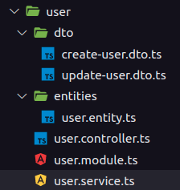
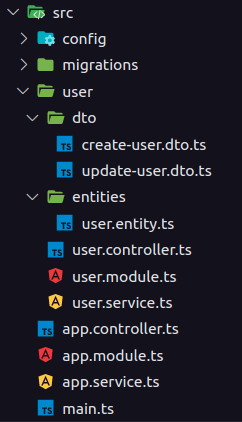

GRASPs
1. Histórico de versão
| Versão | Data | Descrição | Autor |
|---|---|---|---|
| 0.1 | 21/03/2022 | Criação do documento | Mateus Gomes |
| 0.2 | 21/03/2022 | Correção no alt das imagens | Mateus Gomes |
| 0.3 | 21/03/2022 | Revisão do documento | Juliana Valle |
2. Definição
GRASP é uma sigla para General Responsability Assignment Software Patterns, que pode ser traduzido para Padrões de Software para Atribuições de Responsabilidade Geral. De acordo com Larman (2005, p. 220), os padrões GRASP definem princípios fundamentais para o design orientado a objetos e atribuição de responsabilidades, expressados como padrões de projeto.
Os padrões GRASP são um auxiliar de aprendizagem para ajudar a entender o essencial do design orientado a objeto e aplicar o raciocínio do design de uma maneira metódica, racional e explicável (Larman, 2005 p. 216). Os padrões GRASP, quando seguidos, fornecem uma boa estrutura para as aplicações e habilitam a fácil adaptação diante da necessidade de mudanças (DevMedia).
A consequência direta das recomendações propostas pelos GRASPs é um código melhor organizado, de fácil manutenção e ainda, capaz de ser compreendido por diferentes desenvolvedores sem grandes dificuldades (DevMedia). Os GRASPs são descritos pelos seguintes tópicos:
- GRASP Criador;
- GRASP Especialista;
- GRASP da Alta Coesão;
- GRASP do Baixo Acoplamento;
- GRASP Controlador;
- GRASP do Polimorfismo;
- GRASP da Invenção Pura;
- GRASP da Indireção;
- GRASP de Variações Protegidas.
Neste artefato, serão abordados os tópicos Controlador, Especialista e Alta Coesão e Baixo Acoplamento, abordando suas respectivas definição e como estes princípios foram utilizados no desenvolvimento do projeto Garimpei.
3. Controlador
3.1 Definição
O GRASP Controlador define que deve haver um componente específico, dentro do paradigma da Orientação a Objetos, que é responsável por lidar com as requisições dos atores do sistema. O Controlador sabe interpretar as ações da interface de usuário, e como conectar estas ações com os comportamentos do sistema, ou seja, o Controlador é a ponte entre a interface (Front-End) e o servidor (Back-End) da aplicação (Koopmans, 2017). O Controlador é um dos pilares da arquitetura MVC (Model-View-Controller), sendo muito importante para os frameworks modernos de desenvolvimento web.
3.2 Utilização
Dentro do framework Nest.js, os Controladores são responsáveis por lidar com as requests recebidas e devolver responses para o client, sendo uma estrutura essencial para a construção de APIs com este framework. Os Controladores fazem parte da estrutura das entidades do sistema em Nest.js, mapeando as rotas destas entidades.

Na imagem acima, é possível observar a estrutura da entidade de usuário do sistema de autenticação do projeto Garimpei, que utiliza o framework Nest.js. Nesta estrutura, existe o arquivo user.controller.ts, que define o Controlador para essa entidade, que nada mais é que uma classe mapeando as requisições relacionadas à entidade de usuários.

O arquivo user.controller.ts implementa a classe UserController, que é justamente o Controlador da entidade de usuários. Esta classe possui funções nas quais mapeiam as requisições disponíveis para esta entidade, como é o caso da função findAll(), que é mapeada para ser a requisição com o método GET, que chama o serviço responsável por encontrar e devolver todos os usuários cadastrados dentro do sistema.
4. Especialista
4.1 Definição
O GRASP Especialista define que deve haver um encapsulamento das informações a respeito de uma tarefa em uma classe específica. Este padrão é semelhante a um especialista no mundo real, ou seja, é possível existir uma mesma classe respnsável por executar várias tarefas diferentes, mas classes especialistas trazem as ferramentas ideais para executar a tarefa de sua responsabilidade (Koopmans, 2017).
4.2 Utilização
Dentro da API de autenticação do projeto Garimpei, é possível observar o padrão GRASP Especialista na estrutura do projeto.
Como pode ser visto na imagem acima, a entidade de usuário é dividida em alguns arquivos, sendo que cada arquivo possui uma responsabilidade específica, sendo elas:

dtos: os arquivos dtos servem para descrever os tipos de dados esperados por determinada classe;user.entity.ts: este arquivo é responsável por modelar a entidade de usuário no banco de dados, definindo as colunas e relacionamentos da mesma;user.controller.ts: este arquivo é responsável por ser o componente Controlador da entidade de usuário, mapeando as requisições da mesma;user.module.ts: este arquivo é responsável por guardar as configurações da entidade;user.service.ts: este arquivo é responsável por implementar os serviços da entidade de usuário, implementando as funcionalidades e regras de negócio necessárias para as requisições que são mapeadas pelo componente Controlador.
5. Alta Coesão e Baixo Acoplamento
5.1 Definição
Larman (2005) define acoplamento como uma métrica que mede a força das conexões de um código, ou seja, o quão dependente a camada de conhecer está entre os diversos componentes do sistema. Sabendo disso, o padrão GRASP Baixo Acoplamento define um modelo de implementação que visa:
- Menor dependência entre as classes;
- Menor impacto por mudanças em classes existentes;
- Maior potencial de reutilização de código.
O padrão GRASP Alta Coesão vem para complementar o príncipio do baixo acoplamento, trazendo padrões para a camada de responsabilidades de cada componente do sistema, sendo possível determinar o nível de conexão entre os diferentes elementos do sistema.
5.2 Utilização
O framework Nest.js define padrões em sua utilização, principalmente ao utilizar sua interface (CLI) na hora de construir os recursos da aplicação. Na implementação da API de autenticação do projeto Garimpei, esta interface foi utilizada para gerar todos os recursos da aplicação, como pode ser observado na imagem abaixo.

Ao utilizar estes padrões ja estabelecidos pelo Nest.js, a implementação já segue práticas de Alta Coesão e Baixo Acomplamento, dando uma própria responsabilidade para cada componente do projeto e proporcionando um nível adequado de acoplamento entre os elementos do sistema.
6. Conclusão
Após conhecer e implementar os padrões de software estabelecidos pelo GRASP no projeto Garimpei, notou-se que o sistema ficou muito amigável para entender a responsabilidade de cada componente e a implementação possui um bom suporte para mudanças e para novas features, colaborando muito com a produtividade do grupo, e principalmente, para a qualidade do código e da aplicação.
7. Referências
[1] Larman, C. 2005. Applying UML and Patterns – An Introduction to Object-Oriented Analysis and Design and Iterative Development 3rd ed. New Jersey.
[2] Desenvolvimento com qualidade com GRASP. DevMedia. Disponível em https://www.devmedia.com.br/desenvolvimento-com-qualidade-com-grasp/28704. Acesso em: 21 de março de 2022.
[3] KOOPSMANS, Regan. Understanding the GRASP Design Patterns. Medium, 2017. Disponível em https://medium.com/@ReganKoopmans/understanding-the-grasp-design-patterns-2cab23c7226e. Acesso em: 21 de março de 2022.
[4] SERRANO, Milene. Arquitetura e Desenho de Software AULA – GRASP – PARTE I. 36 slides.
[5] SERRANO, Milene. Arquitetura e Desenho de Software AULA – GRASP_A - COMPLEMENTAR – PARTE I. 66 slides.